<!doctype html>
<html lang="en">
<head>
<meta charset="utf-8">
<!-- CUSTOMIZE THIS! -->
<title>pyzeta</title>
<meta name="author" content="Christof Schöch">
<!-- END -->
<meta name="description" content="Slides">
<meta name="apple-mobile-web-app-capable" content="yes">
<meta name="apple-mobile-web-app-status-bar-style" content="black-translucent">
<meta name="viewport" content="width=device-width, initial-scale=1.0, maximum-scale=1.0, user-scalable=no, minimal-ui">
<link rel="stylesheet" href="css/reveal.css">
<link rel="stylesheet" href="css/theme/simple.css" id="theme">
<!-- Code syntax highlighting -->
<link rel="stylesheet" href="lib/css/zenburn.css">
<!-- Printing and PDF exports -->
<script>
var link = document.createElement( 'link' );
link.rel = 'stylesheet';
link.type = 'text/css';
link.href = window.location.search.match( /print-pdf/gi ) ? 'css/print/pdf.css' : 'css/print/paper.css';
document.getElementsByTagName( 'head' )[0].appendChild( link );
</script>
<!--[if lt IE 9]>
<script src="lib/js/html5shiv.js"></script>
<![endif]-->
</head>

<body>
<div class="reveal">
<div class="slides">
<section data-markdown="" data-separator="^\n---\n" data-separator-vertical="^\n--\n" data-charset="utf-8">
<script type="text/template">

<!-- THIS IS WHERE THE CONTENT GOES! -->
<!-- Any section element inside of this container is displayed as a slide -->

# What's in a Number? Understanding Measures of Distinctiveness
<br/>
<hr/>
<br/>
Christof Schöch
<br/>
<br/>
**ESU Leipzig, July 18, 2017**
<br/>
<br/>
slides: http://christofs.github.io/pyzeta_en
<br/>
<hr/>
</img>&nbsp;&nbsp;&nbsp;&nbsp;&nbsp;&nbsp;</img>&nbsp;&nbsp;&nbsp;&nbsp;&nbsp;&nbsp;</img>

---
# Overview
<br/>
1. [What's in a Number?](#/2)
2. [How do we Compare Numbers?](#/3)
3. [Measures of Distinctiveness](#/4)
4. [Zeta: Calculation and Properties](#/5)
5. [Application: French Drama](#/6)
6. [Extensions to Zeta](#/7)


---
# 1. What's in a Number?

--
## Some recent results
<br/>
* Probability of the "death"-topic <br/>in French crime fiction: 2.0 percent  <!-- .element: class="fragment" data-fragment-index="1" -->
* Average sentence length in Simenon's<br/> novels: 12.1 words <!-- .element: class="fragment" data-fragment-index="2" -->
* Degree of similarity between the <br/>novels of Leroux and Ponson: 0.55 <!-- .element: class="fragment" data-fragment-index="3" -->

--
## How do numbers acquire meaning?
<br/>
<p>By comparison with...</p> <!-- .element: class="fragment" data-fragment-index="1" -->
* a range of possible values <!-- .element: class="fragment" data-fragment-index="2" -->
* a range of typical values  <!-- .element: class="fragment" data-fragment-index="3" -->
* values of relevant comparison text(s) <!-- .element: class="fragment" data-fragment-index="4" -->


--
## Topic prevalence
<a href="img/2_topic49-wordle-comparison.png">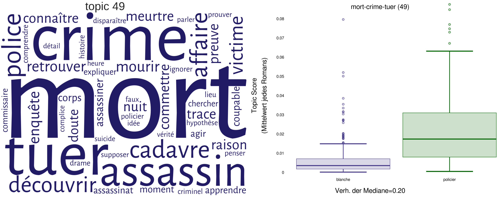</a>
<p>non-crime fiction: 0.4% &nbsp; | &nbsp; crime fiction: 2.0% </p>

--
## Mean sentence length
<a href="img/novel-simenon-vs-contemporains_1900-2000_creation-SL-mean_scatterplot.svg">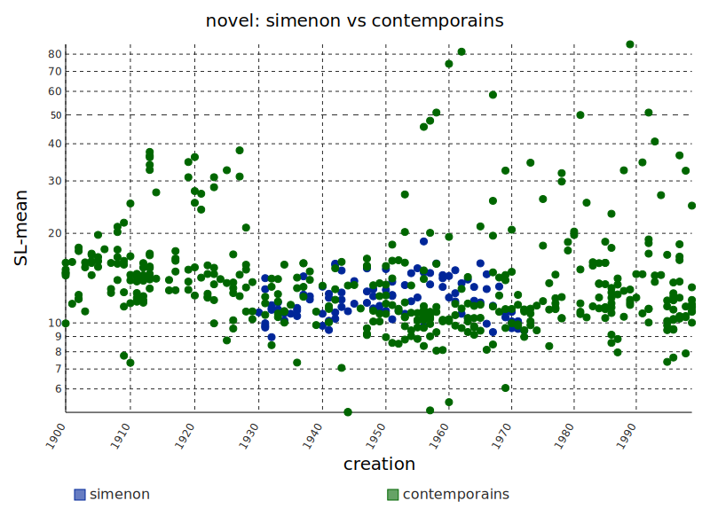</a>

Simenon: 12.1 | contemporaries: 15.1 words

--
## Topic-based author (dis)similarity
<a href="img/6_clustering_marked.png">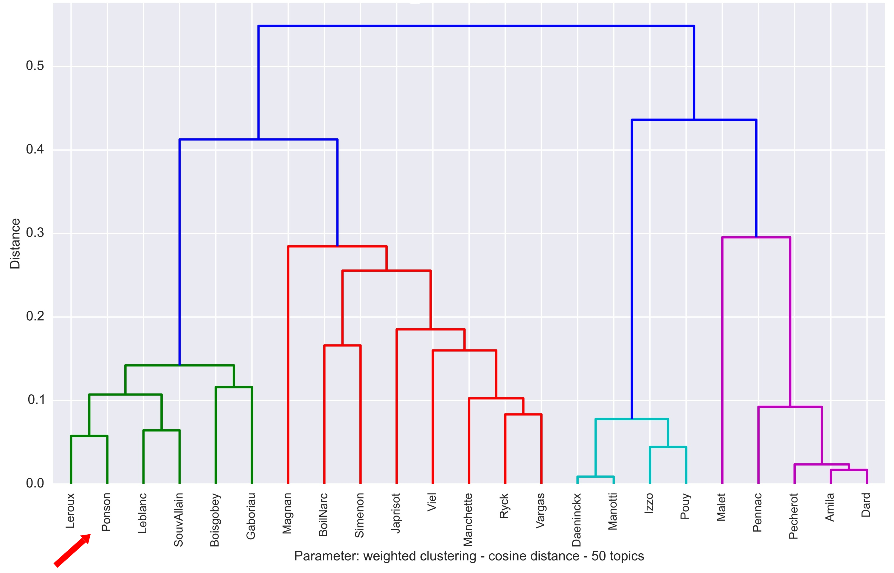</a>
<p>Ponson/Leroux: 0.55 | Daeninckx/Manotti: 0.15</p>

---
# 2. How do we compare numbers?


--
## Basis: What do we compare?
<br/>
* Similar level of abstraction <!-- .element: class="fragment" data-fragment-index="1" -->
    * Works by two authors: e.g., Shakespeare vs. Marlowe
    * Works in two genres: e.g., crime fiction vs. historical novel
    * Works from two periods: e.g., Classicism vs. Romanticism<br/><br/>
* Different levels of abstraction <!-- .element: class="fragment" data-fragment-index="2" -->
    * One novel vs. all other novels by a given author
    * Tragedies vs. all other subgenres of drama
    * One author's work vs. a large reference corpus

--
## Goal: find distinctive features
<br/>
* Distinctiveness <!-- .element: class="fragment" data-fragment-index="1" -->
    * What makes a feature "distinctive"?
    * Not frequency, but unusual frequency<br/><br/>
* Measures of distinctiveness <!-- .element: class="fragment" data-fragment-index="2" -->
    * Many different measures of distinctiveness
    * Common aim: quantify the extent of difference

--
## Distinctively German?
<a href="img/bier1.jpg"></a>
<small>
Source: User:Benreis  <br/>https://commons.wikimedia.org/wiki/File:Aufse%C3%9F_Bier.jpg | licence: [CC-BY-SA](https://creativecommons.org/licenses/by-sa/3.0/deed.en)</small>

--
## Distinctively German!
<a href="img/apfelschorle1.jpg"></a>
<small>
Source: User:Bundesstefan <br/>https://commons.wikimedia.org/wiki/File:Apfelschorle.jpg | licence: public domain.</small>


---
# 3. Measures of Distinctiveness

--
## Naive Baseline:<br/>ratio of relative frequencies (rrf)
<br/>
**rrf<sub>i</sub> = rf<sub>i</sub>(T) / rf<sub>i</sub>(C)**
<br/>
<br/>
* T = Target partition
* C = Comparison partition
* rf<sub>i</sub> = relative frequency of feature i

--
## Sample output: tragedy vs. comedy
<br/>
* Tragedy <!-- .element: class="fragment" data-fragment-index="1" -->
    * pyrrhus, parricide, sénat, sylla, tibère, <br/>tullie, tarquin, tamerlan, tancrède, thésée<br/><br/>
* Comedy <!-- .element: class="fragment" data-fragment-index="2" -->
    * marquis, galant, coquin, diable, joli, <br/>ça|cela, angélique, carrosse, damis, tante

--
## Weaknesses of the rrf
<br/>
* Looks at the entire partition as one entity <!-- .element: class="fragment" data-fragment-index="1" -->
* Does not consider distribution of values <br/>(e.g., spread around mean) <!-- .element: class="fragment" data-fragment-index="2" -->
* You cannot perform a significance test <!-- .element: class="fragment" data-fragment-index="3" -->
* Overemphasizes words which are very rare in one partition <!-- .element: class="fragment" data-fragment-index="4" -->


--
## Alternative: chi-square / log-likelihood
<br/>
* Based on a contingency table <!-- .element: class="fragment" data-fragment-index="1" -->
* Compares an expected value with an observed value <!-- .element: class="fragment" data-fragment-index="2" -->
* Allows to perform a significance test <!-- .element: class="fragment" data-fragment-index="3" -->
* But: does not take distribution into account <!-- .element: class="fragment" data-fragment-index="4" -->


--
## Alternative: t-Test
<br/>
* Takes distribution into account <br/>(mean, standard deviation, sample size) <!-- .element: class="fragment" data-fragment-index="1" -->
* Allows to perform a significance test for the difference <!-- .element: class="fragment" data-fragment-index="2" -->
* But: assumes normal distribution <!-- .element: class="fragment" data-fragment-index="3" -->


--
## Empirical evaluation
<br/>
<a href="img/testing-matilda_Lijffijt.png">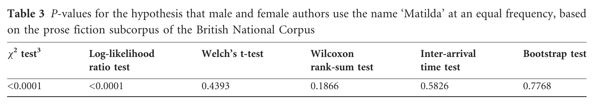</img></a>
* Lijffit et al. 2014 using BNC
* "Matilda" in male/female authors
* Challenge: "spiky" distribution


---
# 4. Zeta: Calculation and properties


--
## Zeta
<br/>
* John Burrows 2007: proposes Zeta (follow-up to Delta) <!-- .element: class="fragment" data-fragment-index="1" -->
* Hugh Craig 2009: slightly modified version <!-- .element: class="fragment" data-fragment-index="2" -->
* David Hoover 2010: Excel implementation <!-- .element: class="fragment" data-fragment-index="3" -->
* Maciej Eder 2013: R implementation (in stylo: 'oppose()') <!-- .element: class="fragment" data-fragment-index="4" -->
<br/>
<br/>
<p>(see [references](#/8/2))</p> <!-- .element: class="fragment" data-fragment-index="5" -->


--
## Zeta, 1: partitions and segmentation
<br/>
* T = target partition
* C = comparison partition
<br/>
<br/>
* groups of texts, based on metadata
* each text is split into segments of equal length


--
## Zeta, 2: document frequencies
<br/>
**df<sub>i</sub>(T) and df<sub>i</sub>(C)**
<br/>
<br/>
* df<sub>i</sub> = number of documents <br/>in partition that contain word i


--
## Zeta, 3: document proportions
<br/>
**dp<sub>i</sub>(T) = df<sub>i</sub>(T) / n(T)**

**dp<sub>i</sub>(C) = df<sub>i</sub>(C) / n(C)**
<br/>
<br/>
* dp<sub>i</sub> = document proportion, i.e. proportion <br/>of documents that contain word i
* n = number of segments in a given partition


--
## Zeta, 4: subtraction
<br/>
**Zeta<sub>i</sub> = dp<sub>i</sub>(T) - dp<sub>i</sub>(C)**
<br/>
<br/>
* Not a ratio, but simple subtraction!
* Calculate this score for each word
* Sort by descending Zeta


--
## Zeta: properties
<br/>
* Spikey words (i.e. proper names) <br/>cannot have extreme Zeta score <!-- .element: class="fragment" data-fragment-index="1" -->
* Very widepread words (i.e. function words)<br/>cannot have extreme Zeta score <!-- .element: class="fragment" data-fragment-index="2" -->
* Favors medium-frequency content words<br/> (highly interpretable) <!-- .element: class="fragment" data-fragment-index="3" -->


--
## Zeta: properties
<br/>
* Zeta lies between -1 and +1 <br/>(fixed theoretical range) <!-- .element: class="fragment" data-fragment-index="1" -->
* No inherent cutoff of distinctiveness <!-- .element: class="fragment" data-fragment-index="2" -->
* No significance test <!-- .element: class="fragment" data-fragment-index="3" -->


--
## Document proportions and Zeta
<p><a href="img/typescatter_subgenre-tragedie-comedie_3000-lemmata-all-2000-0.3.svg"></img></a></p>
<p>(Example data: French tragedies and comedies)</p>


---
# 5. Implementation and application


--
## pyzeta.py on GitHub
<p><a href="img/pyzeta-github.png">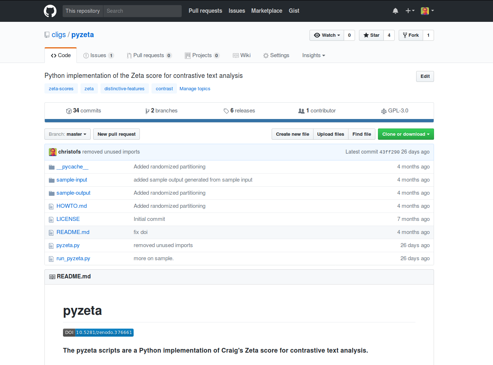</img></a></p>
<p>See: <a href="https://github.com/cligs/pyzeta">github.com/cligs/pyzeta</a></p>

--
## Implemenation: basic steps
<br/>
1. Prepare texts: segmentation, annotation <!-- .element: class="fragment" data-fragment-index="1" -->
2. Build groups: based on metadata  <!-- .element: class="fragment" data-fragment-index="2" -->
3. Select features (based on POS, stoplist, etc.) <!-- .element: class="fragment" data-fragment-index="3" -->
4. Calculate zeta for each type <!-- .element: class="fragment" data-fragment-index="4" -->
5. Visualize results <!-- .element: class="fragment" data-fragment-index="5" -->


--
## Application: Tragedies vs. comedies
<p><a href="img/zetascores_comedie-tragedie_30-lemmata.png"></a></p>
<p>2x30 words with most extreme Zeta scores</p>


--
## Tragedies and comedies by Zeta words
<p><a href="img/worksbyzeta_subgenre-tragedie-comedie_3000-lemmata-all_100.svg">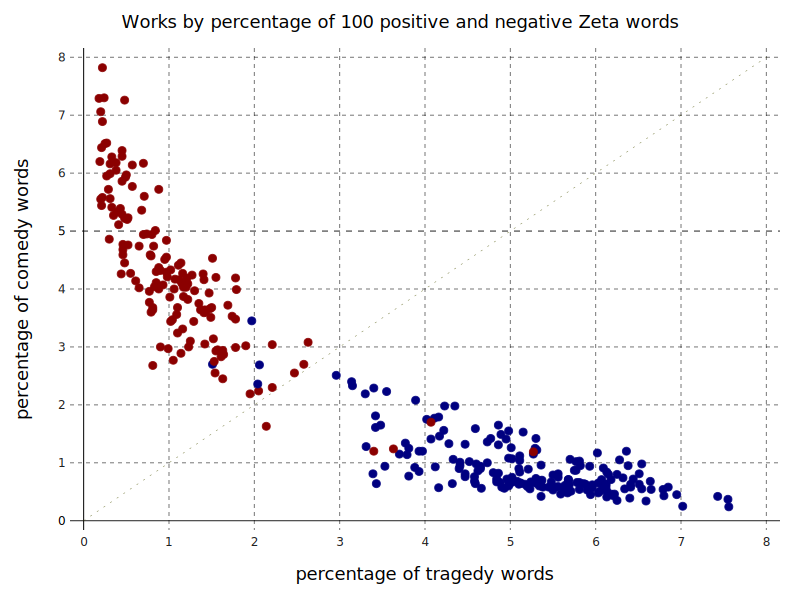</img></a></p>
<p>Each text by percentage of tragedy and comedy words</p>


--
## Tragedy, comedy, tragicomedy
<p><a href="img/threeway_pca.png">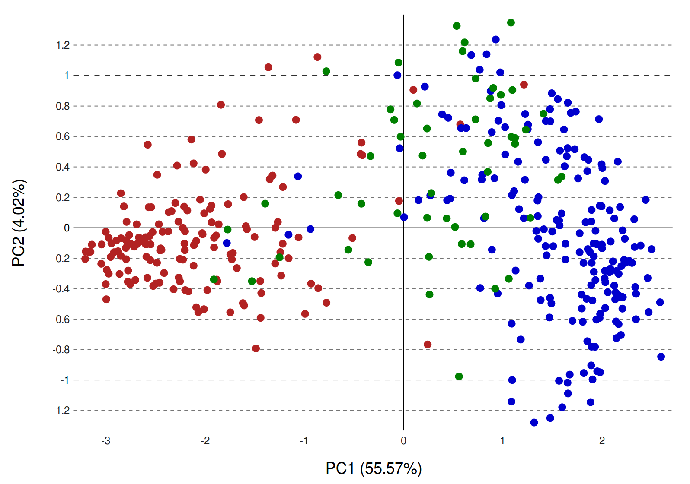</img></a></p>
<p>PCA based on frequency of 2x25 Zeta words</p>


<!--
## Boxplot der Verteilungen (PC1)
<p><a href="img/pcboxplot_comedie-tragedie-tragicomedie_3000-lemmata-all-25.svg"></img></a></p>
<p>(Beispiel: französische Theaterstücke)</p>
-->


---
# 6. Extensions


--
## Confidence interval
<br/>
* Problem: Zeta does not have built-in <br/>significance testing <!-- .element: class="fragment" data-fragment-index="1" -->
* Solution: Calculate a confidence <br/>interval based on random partitions  <!-- .element: class="fragment" data-fragment-index="2" -->


--
## Zeta scores (reminder)
<p><a href="img/zetascores_comedie-tragedie_30-lemmata.png"></img></a></p>


--
## Zeta scores for random partitions
<p><a href="img/example_scoresplot_random-one-two_3000-lemmata-all-30.svg">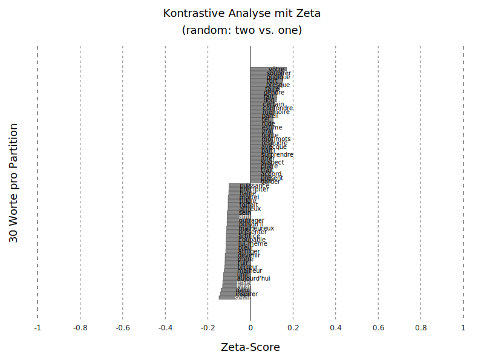</img></a></p>


--
## Distribution of Zeta scores
<p><a href="img/randomdist_random-one-two_3000-lemmata-all-ft1.png">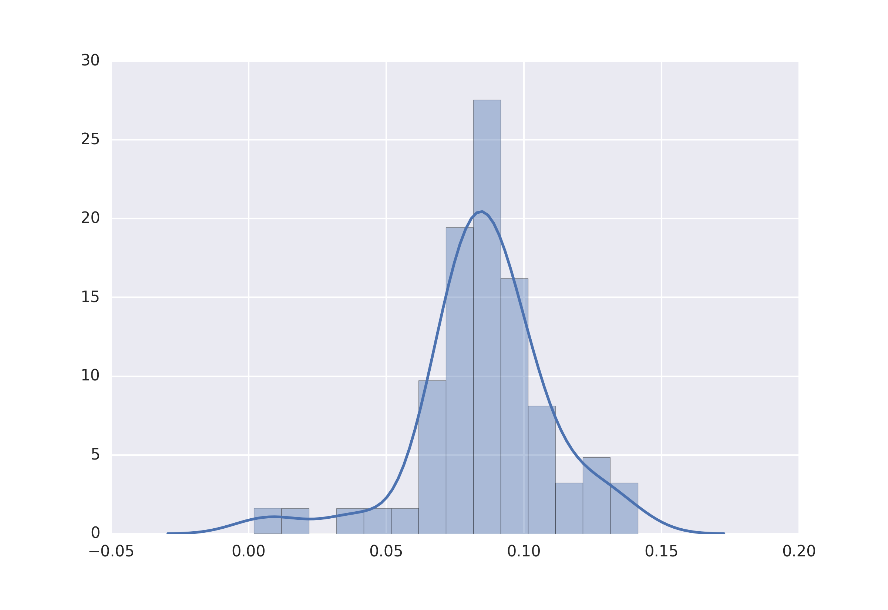</img></a></p>
(for one rank, based on 50 random partitionings)


--
## Zeta with confidence interval
<p><a href="img/zetascores_comedie-tragedie_30-lemmata_with-CI.png">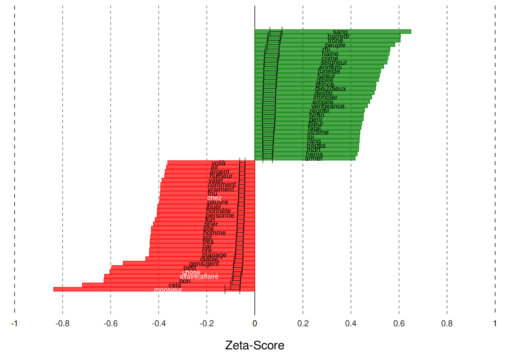</img></a></p>


--
## Adjusted Zeta
<p><a href="img/typescatter_subgenre-tragedie-comedie_3000-lemmata-all-2000-0.3.svg"></img></a></p>
* Problem:
    * similar Zeta scores for different dp ranges
    * high dp easily leads to high Zeta
    * dp limits maximal Zeta score


--
## Solution
<br/>
* adjust Zeta scores for overall dp  <!-- .element: class="fragment" data-fragment-index="1" -->
* penalize high dp, support low dp <!-- .element: class="fragment" data-fragment-index="2" -->
* using log transformation of dp values <!-- .element: class="fragment" data-fragment-index="3" -->
* scale back to range of original Zeta <!-- .element: class="fragment" data-fragment-index="4" -->
* Only issue: more parameters <!-- .element: class="fragment" data-fragment-index="5" -->


--
## Result
<p><a href="img/illustration_Zeta-vs-adjZeta_extremes.png">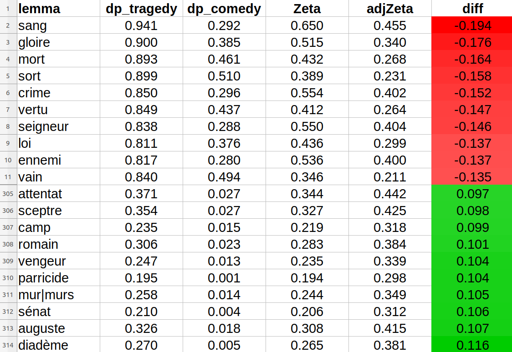</img></a></p>


---
# Conclusion

--
## Conclusion
<br/>
* Zeta: useful measure of distinctiveness <!-- .element: class="fragment" data-fragment-index="1" -->
    * simple mathematically
    * highly interpretable results
* Extensions: small steps  <!-- .element: class="fragment" data-fragment-index="2" -->
    * adjusted Zeta
    * confidence interval
* Further work <!-- .element: class="fragment" data-fragment-index="3" -->
    * comparison with other measures
    * question of 'ground truth' for evaluation


--
## References
<small>

* Burrows, John F. (2007). "All the way through: testing for authorship in different frequency strata". _Literary and Linguistic Computing_, 22(1): 27-48.
* Hoover, David L. “Teasing out Authorship and Style with T-Tests and Zeta.” In _Digital Humanities Conference_. London, 2010. http://dh2010.cch.kcl.ac.uk/academic-programme/abstracts/papers/html/ab-658.html.
* Lijffijt, Jefrey et al. “Significance Testing of Word Frequencies in Corpora.” _Digital Scholarship in the Humanities_ 31, no. 2 (2014): 374–97. doi:10.1093/llc/fqu064.
* Oakes, Michael P. _Statistics for Corpus Linguistics_. Edinburgh: Edinburgh Univ. Press, 1998.
* Rayson, Paul, and R. Garside. “Comparing Corpora Using Frequency Profiling.” In _Proceedings of the Workshop on Comparing Corpora_, 1–6. Hong Kong: ACM, 2000.
* Schöch, Christof. „Zeta für die kontrastive Analyse literarischer Texte. Theorie, Implementierung, Fallstudie“, in: _Quantitative Verfahren in der Literaturwissenschaft_, ed. Andrea Albrecht et al. Berlin: de Gruyter (to appear).
* Schöch, Christof. „Genre Analysis“, in: _Digital Humanities for Literary Studies: Theories, Methods, and Practices_, ed. by James O'Sullivan. University Park: Penn State Univ. Press (to appear).

<p><br/>With thanks to pygal and reveal.js</p>


</small>


---
<br/>
<br/>
<br/>
## Danke!
<br/>
<br/>
<br/>
<br/>
<br/>
<br/>
<br/>
<hr/>
<p>Christof Schöch, 2017</p>
<p><a href="https://christofs.github.io/">christofs.github.io</a></p>
<p><a href="https://creativecommons.org/licenses/by/4.0/">CC-BY 4.0</a><br/></p>
<hr/>
<br/>
<br/>
</script>
</section>


<!-- DON'T TOUCH UNLESS YOU KNOW WHAT YOU'RE DOING :-) -->
</div>
<script src="lib/js/head.min.js"></script>
<script src="js/reveal.js"></script>
<script>
// Full list of configuration options available at:
// https://github.com/hakimel/reveal.js#configuration
Reveal.initialize({
    controls: true,
    progress: true,
    history: true,
    center: true,
    transition: 'slide', // none/fade/slide/convex/concave/zoom
    // Optional reveal.js plugins
    dependencies: [
        { src: 'lib/js/classList.js', condition: function() { return !document.body.classList; } },
        { src: 'plugin/markdown/marked.js', condition: function() { return !!document.querySelector( '[data-markdown]' ); } },
        { src: 'plugin/markdown/markdown.js', condition: function() { return !!document.querySelector( '[data-markdown]' ); } },
        { src: 'plugin/highlight/highlight.js', async: true, callback: function() { hljs.initHighlightingOnLoad(); } },
        { src: 'plugin/zoom-js/zoom.js', async: true },
        { src: 'plugin/notes/notes.js', async: true }
        ]
    });
</script>
</body>
</html>
